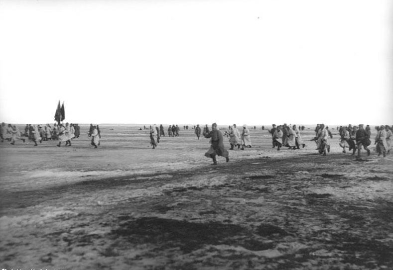

En 1917, anarchistes et bolcheviks se battent souvent côte à côte : contre le tsar, puis contre le gouvernement provisoire. Le mot d'ordre « Tout le pouvoir aux soviets » plaît aux libertaires. Très vite pourtant, ils voient le pouvoir passer des soviets au parti, puis du parti à sa direction. L'histoire de la Makhnovtchina est l'exemple le plus parlant de ce que les anarchistes reprochent aux bolcheviks.
Le désaccord de fond : prendre l'État ou le détruire
| Les bolcheviks | Les anarchistes | |
|---|---|---|
| L'État | Le prendre et s'en servir : « dictature du prolétariat », censée disparaître plus tard. | Le détruire tout de suite : un État, même « ouvrier », recrée une classe qui commande. |
| Qui décide | Le parti, avant-garde qui sait ce qui est bon pour la classe ouvrière. | Les travailleuses et travailleurs eux-mêmes, en assemblées fédérées. |
| Les soviets | Un outil du parti, qui doit y être majoritaire et les diriger. | Des conseils libres, où aucun parti ne commande. |
| La terre et les usines | Nationalisées : l'État en devient le propriétaire et le patron. | Socialisées : gérées par celles et ceux qui y travaillent. |
| Les moyens | La fin justifie les moyens : police politique, terreur, armée centralisée. | Les moyens préparent la fin : on ne fait pas une société libre avec des méthodes de caserne. |
Bien avant 1917, Bakounine prévenait déjà Marx : un « État populaire » serait gouverné par une minorité d'anciens ouvriers devenus gouvernants, qui ne représenteraient plus le peuple mais eux-mêmes.
Des soviets vidés de leur pouvoir
- Décembre 1917 : création de la Tcheka, police politique qui arrête, juge et exécute hors de tout contrôle.
- 1918 : les soviets où les bolcheviks perdent la majorité sont dissous ou leurs élections annulées ; les autres partis socialistes sont exclus peu à peu, puis interdits.
- Dans les usines, les comités d'usine élus par les ouvriers sont remplacés par la direction d'un seul homme, nommé d'en haut, souvent un ancien patron ou cadre.
- En avril 1918, la Tcheka attaque à Moscou les maisons tenues par des groupes anarchistes : des morts, des centaines d'arrestations. La répression des anarchistes ne s'arrêtera plus.
Le blé saisi par les armes
Pour nourrir les villes et l'armée, le pouvoir bolchevique envoie dans les campagnes des détachements armés de réquisition, qui saisissent les récoltes, souvent jusqu'aux semences. Les paysans qui résistent sont traités de « koulaks », d'ennemis de classe. En Ukraine, cette politique dresse les villages contre les rouges et explique en grande partie le soutien populaire aux makhnovistes, qui proposaient au contraire l'échange direct entre villes et campagnes.
Makhno : trois alliances, trois trahisons
- 1919Allié contre Dénikine, le mouvement convoque son quatrième congrès régional. En juin, Trotsky l'interdit par un ordre officiel et déclare que s'y rendre est une trahison. Des membres de l'état-major makhnoviste sont fusillés, et le front s'ouvre devant les Blancs.
- 1920Après la défaite de Dénikine, à laquelle les makhnovistes ont pris une large part, l'Armée rouge leur ordonne de quitter leur région pour le front polonais. Sur leur refus, ils sont déclarés hors-la-loi.
- Novembre 1920L'accord de Starobelsk promettait la libération des anarchistes emprisonnés et la liberté de propagande. Wrangel à peine battu en Crimée, grâce aussi aux makhnovistes, l'Armée rouge attaque ses alliés et fusille leurs commandants.
Dans le même temps, la presse soviétique présente les makhnovistes comme des « bandits », des « koulaks » ou des pogromistes. Cette légende noire a longtemps servi à justifier leur écrasement.
Une réponse célèbre
En avril 1919, le commandant rouge Dybenko déclare « contre-révolutionnaire » le troisième congrès de la région. Le Conseil militaire révolutionnaire makhnoviste lui répond publiquement, en substance : peut-on appeler révolutionnaires des lois faites par quelques personnes qui se disent révolutionnaires, et qui leur permettent de mettre hors-la-loi un peuple entier plus révolutionnaire qu'elles ? Le congrès, rappellent les makhnovistes, a été élu par les travailleurs eux-mêmes.
Cronstadt, mars 1921

Les marins de la base navale de Cronstadt, près de Petrograd, étaient en 1917 parmi les plus ardents révolutionnaires. En mars 1921, après des grèves ouvrières affamées à Petrograd, ils réclament des soviets réélus librement, la liberté de parole et de presse pour les ouvriers, les paysans, les anarchistes et les socialistes, et la fin des réquisitions. Le pouvoir répond par l'assaut : Trotsky et Toukhatchevski lancent l'Armée rouge sur la glace, et la révolte est écrasée dans le sang. Pour les anarchistes, Cronstadt est la preuve que l'État « ouvrier » tire sur les ouvriers. Emma Goldman, témoin, le raconte dans 1921, l'orage éclate à Petrograd.
Les témoins libertaires
- Emma Goldman et Alexandre Berkman, expulsés des États-Unis, arrivent en Russie en 1920 pleins d'espoir. Ils repartent fin 1921, désespérés, et racontent la bureaucratie, la Tcheka et la persécution des anarchistes. Voir aussi Le communisme n'existe pas en URSS.
- Aux obsèques de Kropotkine, en février 1921, des anarchistes sortent de prison pour une seule journée, sur parole, avant d'y retourner.
- Piotr Archinov écrit l'Histoire du mouvement makhnoviste (publiée en 1923) ; Voline, emprisonné puis exilé, raconte tout dans La Révolution inconnue (1947).
- Errico Malatesta, en Italie, analyse ce que devient la « dictature du prolétariat » : voir Bolchevisme et anarchisme.
Les leçons tirées par les libertaires
- Un parti qui prend l'État au nom des travailleuses et travailleurs finit par gouverner contre eux.
- Sans soviets libres, sans liberté de parole pour les révolutionnaires eux-mêmes, il ne reste de la révolution que le mot.
- La révolution sociale a besoin de se défendre, mais une armée et une police au-dessus du peuple deviennent un nouveau pouvoir.
- Les makhnovistes ont montré qu'une autre voie existait : la terre aux paysans, les congrès libres, la défense par les premiers concernés.
Retour au début du dossier : Makhno et la Makhnovtchina.
Sources et pour aller plus loin
Lire
- La Commune de Cronstadt, Ida Mett, 1938.Le récit classique de la révolte de 1921.
- Le Mythe bolchevik, Alexander Berkman, 1925.Le journal des deux années russes de Berkman, de l'enthousiasme à la rupture.
- Bolchevisme et anarchisme, Malatesta, et Le communisme n'existe pas en URSS, GoldmanNos fiches sur deux critiques libertaires majeures.
- Les Bolcheviks et le contrôle ouvrier, 1917-1921, Maurice Brinton, 1970.Comment les comités d'usine ont été dépossédés au profit de l'État.
Sur le web
- La révolte de KronstadtLe déroulé et le débat historique.
- L'Idée d'égalité et les bolcheviksUn texte de Makhno (Bibliothèque anarchiste).
Dossier rédigé par la bande à Mamie à partir de travaux d'historiennes et d'historiens et de textes des mouvements concernés. Libre de reproduction.